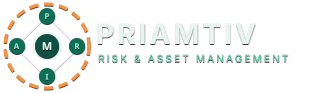
Risk & Asset Management for Small Business
Risk visibility, without the GRC team.
Policy. Risk. Incident. Asset.
One platform — sized for the way small businesses actually work.
The reality
The risks small businesses face every day.
43%
of cyber incidents target small businesses.
82%
of small businesses fail due to cash-flow and operational risk.
A lost laptop. A phishing click. A supplier outage. A missed policy renewal. A customer data request.
Each one is small on its own. Together, they're a business.
The gap
Big companies have GRC teams. Small businesses have a spreadsheet.
Risk software is built for enterprises with full-time officers, audit committees, and six-figure software budgets. SMBs need the same outcomes — without any of that.
Enterprise GRC
$60k+/year, 6-month rollout
Built for compliance officers
SMB Reality
A shared Google Sheet
If anything at all
PRIAM
Day-one usable
Built for the way SMBs work
A single platform for everything that might go wrong—and everything you own.
Four lightweight modules. One shared system of record. Designed so a five-person team and a fifty-person team can both use it from week one.
Five letters. Five connected workflows.
Policy
Draft, publish, version, and track acknowledgement.
Risk
Adaptive, industry-specific assessments and recommendations.
Incident
Queue-based reporting with status, ownership, and audit trail.
Asset
People, customers, suppliers, devices, and vehicles in one ledger.
Management
Roles, approvals, audit, and the dashboard that ties it together.
Living documents, not binders.
Every policy has a status, a version, an effective date, and a paper trail of who acknowledged it. Drafts stay drafts until you publish.
- →Draft → Published → Acknowledged
- →Categories & tags for fast filtering
- →Add-on modules: HIPAA, GDPR, SOC 2

Questionnaires that adapt to your industry, not yours to a checklist.
Pick your NAICS code at signup. PRIAM only asks what's relevant.
Answers feed downstream — change one input, see the score and recommendations update on the spot.
Without PRIAM
A 400-question generic checklist.
With PRIAM
Roughly 50 questions. Only the ones that apply to a 12-person retailer in Oregon.
A score, a matrix, and a prioritized list of fixes.

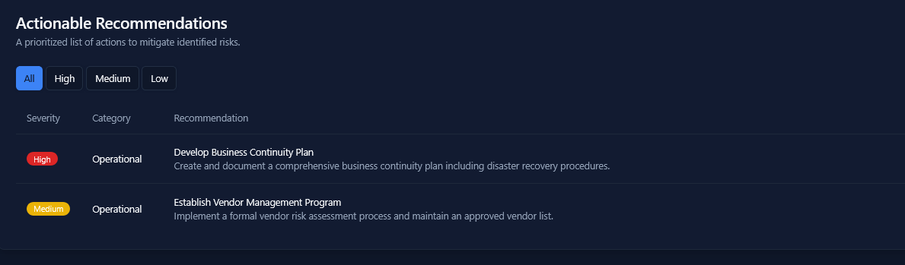
A queue, not an inbox.
Every incident has an owner at every stage. BullMQ-backed transitions, immutable audit trail, automatic notifications.
Submitted
Anyone on the team can report — public or private.
Unassigned
Routed to the right team based on category.
Assigned
A named owner with priority and SLA.
Active
Comments, status updates, and edits — all logged.
Resolved
Closed with a reason. Re-openable if it returns.

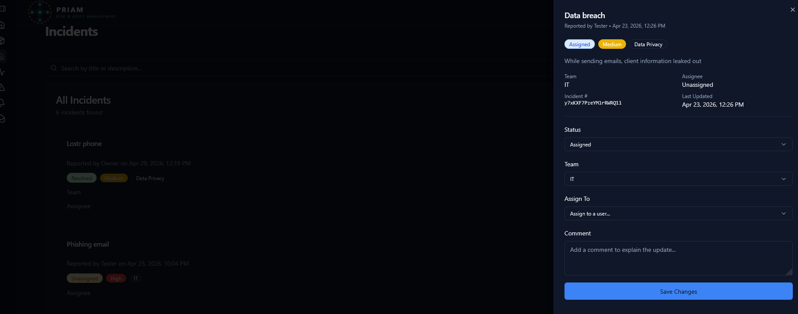
See patterns, not just events.
Three lost devices in a month is a procurement problem, not three tickets.

Five things every business has. One place to track them all.
Employees
Roles, departments, onboarding status.
Customers
NAICS-coded with verification workflow.
Suppliers
Approval-gated entries, audit-ready.
Devices
Computers, phones, peripherals.
Vehicles
Fleet records and assignments.

A guided assessment for the people on the front line.
Annual HIPAA & Data Privacy refreshers — built into PRIAM. Coaches and case workers take a 25-question, 30-minute assessment. Pass at 80% and a Certificate of Completion is generated automatically.
- 25 questions · multiple choice + short answer
- 30-minute timed window with autosave
- 80% to pass · explanations after every attempt
- Certificate issued the moment you pass
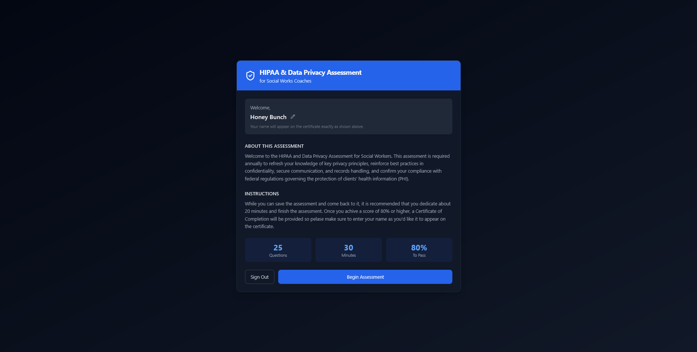
Plain-language scenarios. Saved as you go.
Multiple-choice and short-answer prompts drawn from the situations social-services teams actually run into — with a question palette so participants can jump back to anything still unanswered.
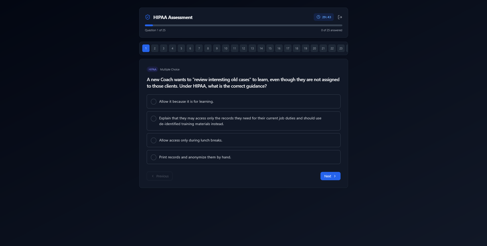
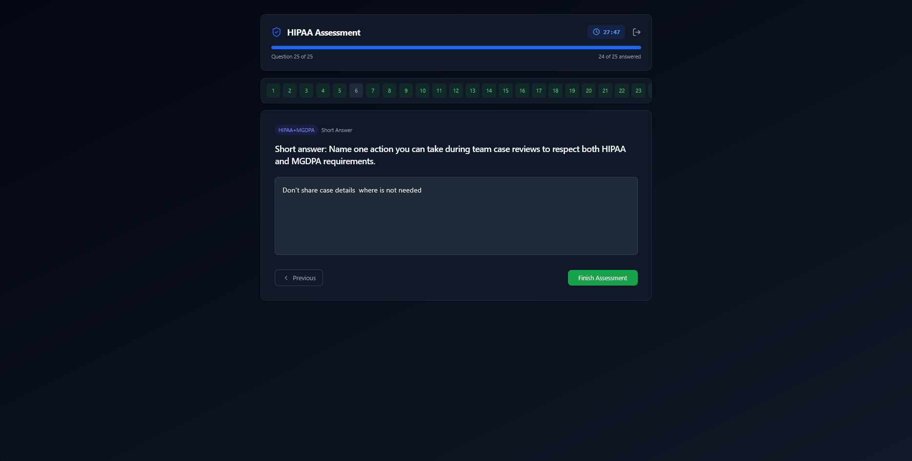
A score, and the reason behind every answer.
Whether you pass or not, every question gets an explanation — so the assessment doubles as training. Retakes are one click away.
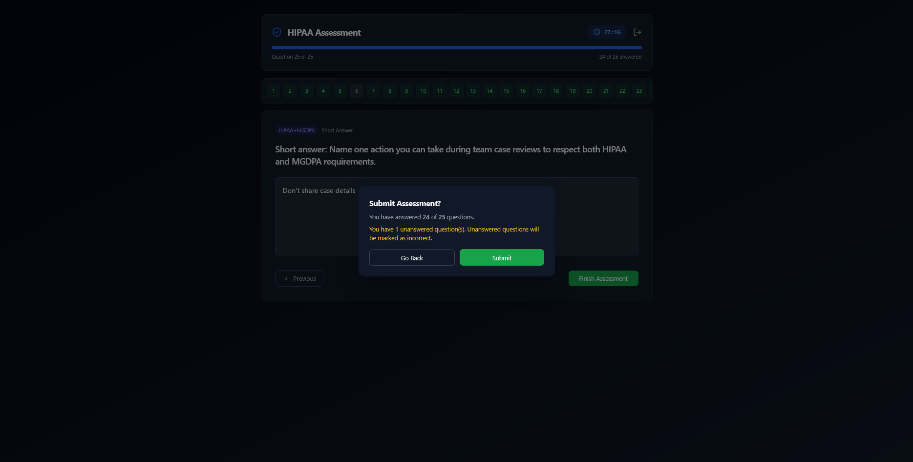
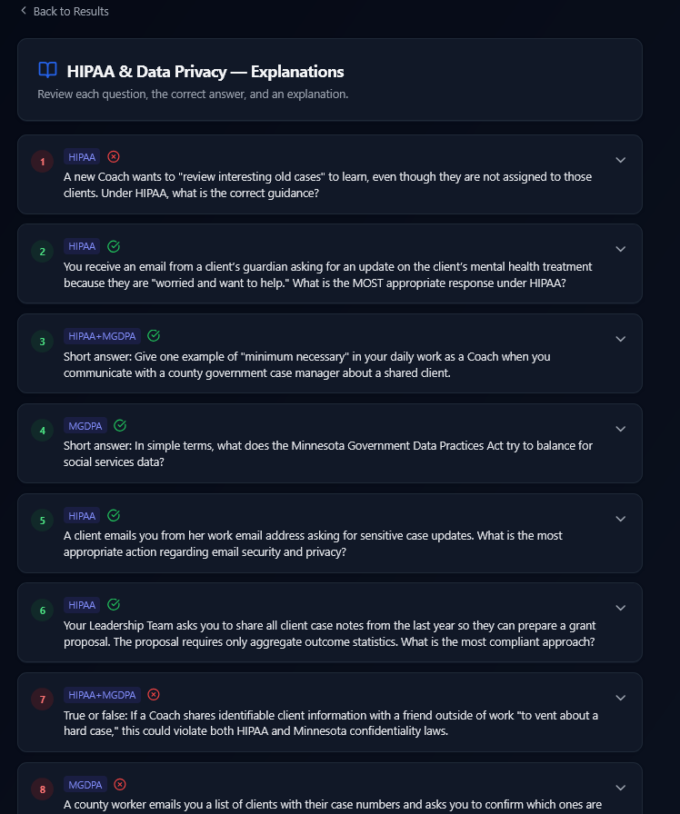
For admins: who's invited, in progress, passed.
A live participant dashboard surfaces invited, in-progress, completed, and failed counts — plus a pass-rate and average-score readout. Compliance leads see assessment status across every tenant they administer, with drill-downs by company, participant, and report.

One control plane behind every tenant.
Author master policy templates, define recommendation rules, import from a built-in catalog, and govern the HIPAA programme — all from a single admin portal.
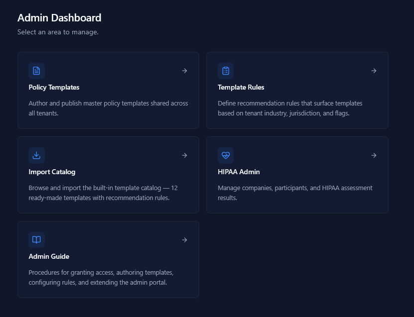
Author once
Master policies with placeholders for tenant-specific values.
Recommend smartly
Industry, jurisdiction, and business-flag-driven matches.
Import in bulk
12 ready-made templates with rules attached.
From one master template to the right policy for every tenant.
Edit a template once with placeholders. Attach rules — NAICS code, state, business flags. Tenants see only the policies that match their profile, ready to publish.
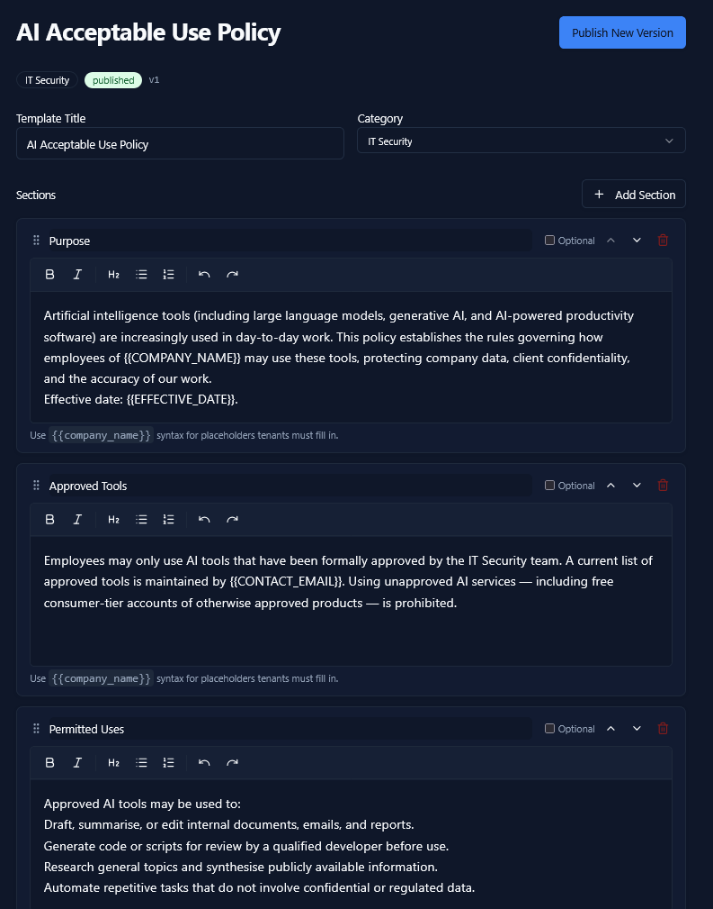
01 · Author
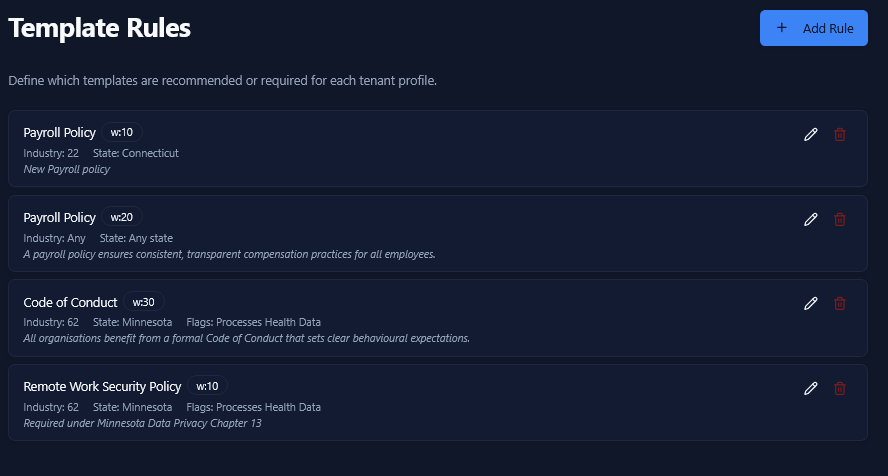
02 · Rule list
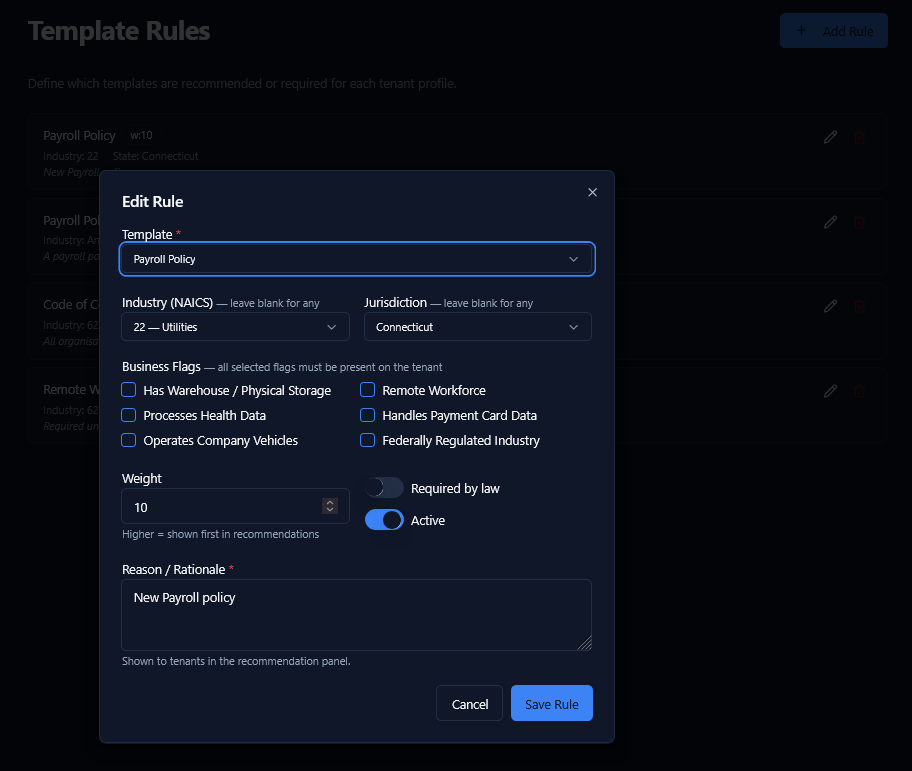
03 · Match
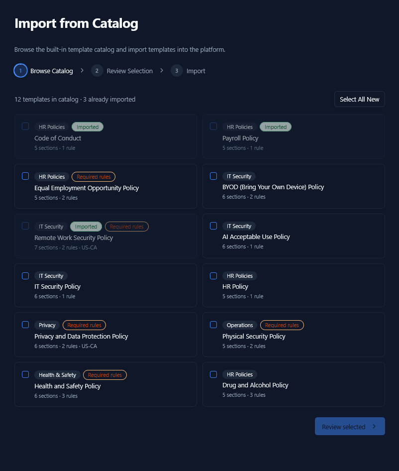
04 · Import
Five built-in roles. Sensible defaults out of the box.
| Role | View | Add asset | Edit employee | Approve | Configure |
|---|---|---|---|---|---|
| Super | ● | ● | ● | ● | ● |
| Admin | ● | ● | ● | ● | ● |
| Manager | ● | ● | — | ● | — |
| Employee | ● | ● pending | — | — | — |
| Viewer | ● | — | — | — | — |
Employees can add customers and suppliers — admins flip them from pending to active.
From signup to your first assessment in under five minutes.
Register
Email, company name, industry, and state. That's the form.
~ 90 secondsVerify
Token-based email verification. No phone tree.
~ 30 secondsInvite team
Add admins and employees with role-scoped invites.
~ 60 secondsStart
Risk assessment is already tailored to your NAICS.
→ ready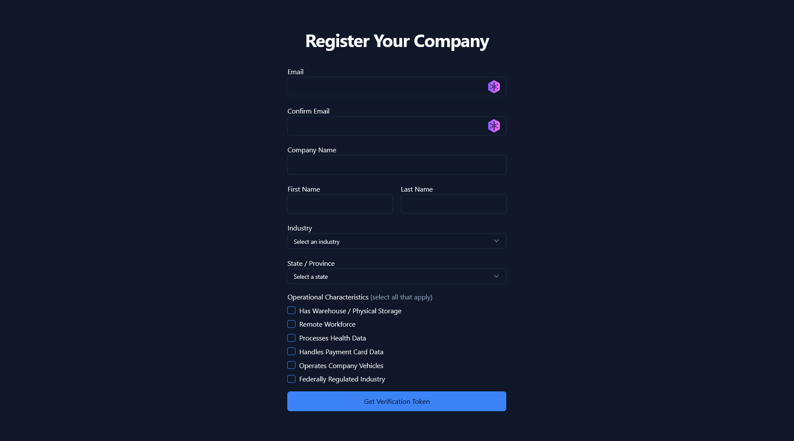
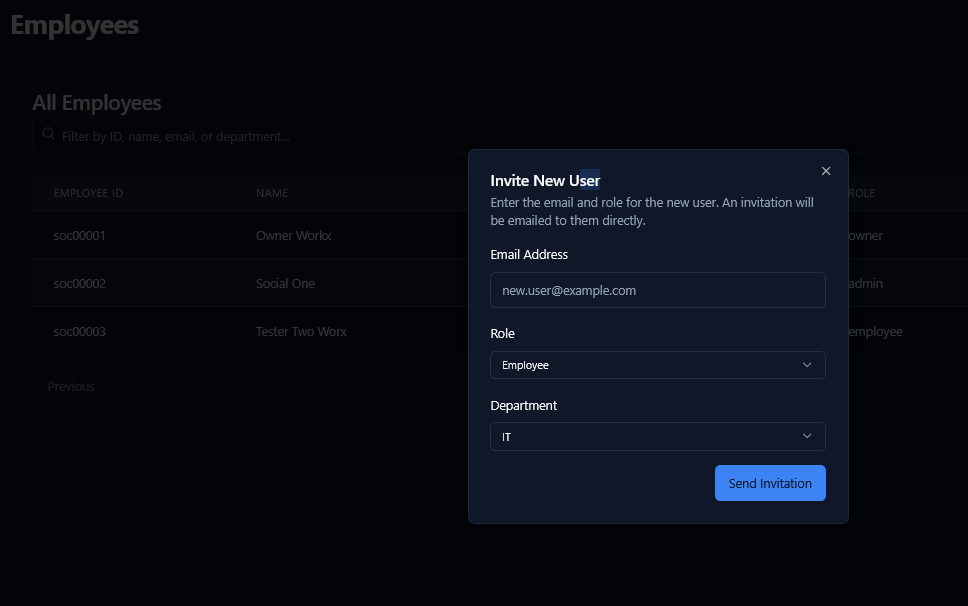
In practice
A typical week with PRIAM.
Mostly two-minute check-ins. Occasionally a deeper assessment. Always one place to look.
Monday
Tuesday
Wednesday
Thursday
Friday
Four reasons PRIAM fits where enterprise GRC doesn't.
Intuitive on day one.
No consultant rollout. Your office manager can drive it.
Industry-tailored questionnaires.
NAICS-aware DAG engine asks only what's relevant.
Incidents have owners, not inboxes.
BullMQ-backed transitions, audit trail, notifications.
Policy, risk, incident, asset — together.
One login. One source of truth. Recommendations that connect.
Multi-tenant by design.
Every record carries a tenant ID. Isolation is enforced at the database query layer — not bolted on at the application edge.
Northwind Retail
tenant_a91f
Cedar & Co.
tenant_b30c
Mendoza Logistics
tenant_c7e2
Your business
tenant_xxxx
Boring, dependable security primitives.
Identity
Firebase Authentication
Industry-standard auth, MFA-ready, with token-based session management.
Authorization
RBAC at the API layer
Every API route runs through withAuth + checkAccess.
Audit
Immutable trails
Assessment evaluations and incident transitions log to append-only collections.
Retention
Lifecycle defaults
Risk assessments expire after 6 months; tenants can extend per record.
Roadmap.
Now — Q2 '26
- Policy management + acknowledgement
- Adaptive risk assessment (DAG engine)
- Queue-based incident workflow
- Asset registry & RBAC
Next — Q3 '26
- Profile change workflows
- Notification rules & digest
- HIPAA & SOC 2 add-on packs
- Slack & Teams integration
Later — Q4 '26+
- Open API & webhooks
- Vendor risk scoring
- Mobile incident reporting
- Industry packs: retail, logistics, healthcare
Audience
If you're wearing the compliance hat — this is for you.
The owner-operator
Running ops, compliance, and HR on the side of the actual business.
The ops lead
Wants a dashboard that doesn't require a vendor relationship to interpret.
The founder under contract pressure
Customers asking "do you have a security program?" — needs one this quarter.
The healthcare or fintech SMB
Needs HIPAA / PCI / SOC 2 hooks without an enterprise GRC platform.
PRIAM · RISK & ASSET MANAGEMENT
Two ways to get started.
Self-serve
Start a free trial
Tenant created in under five minutes. First assessment ready immediately. No card required for the trial.
priam.app/start
Guided
Book a 20-min walkthrough
We'll set you up with sample data for your industry. You'll see exactly what your first month looks like.
priam.app/demo
Thank you.